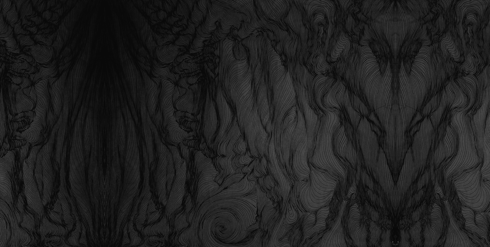
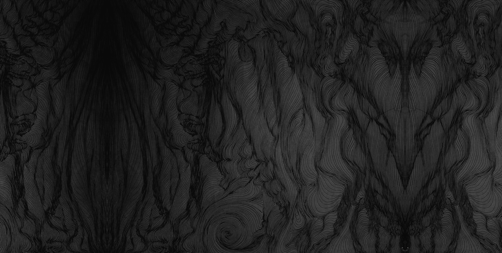
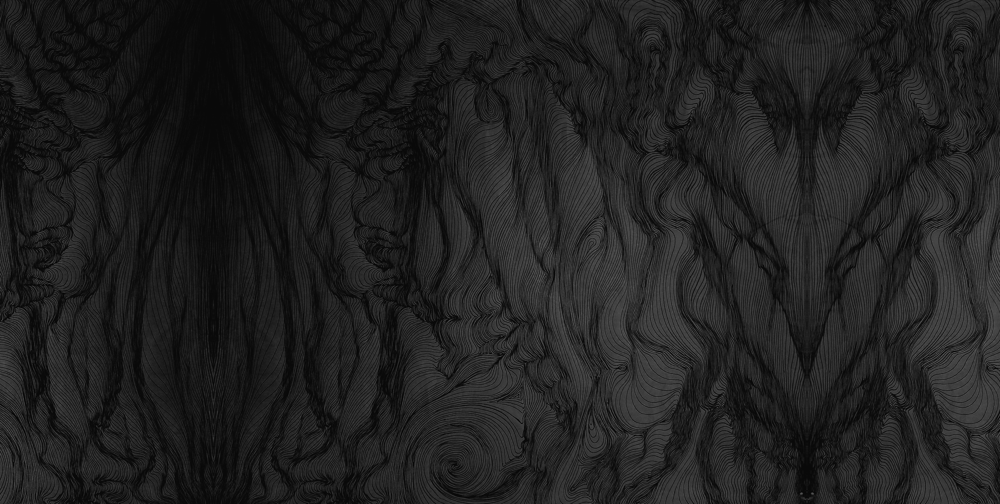
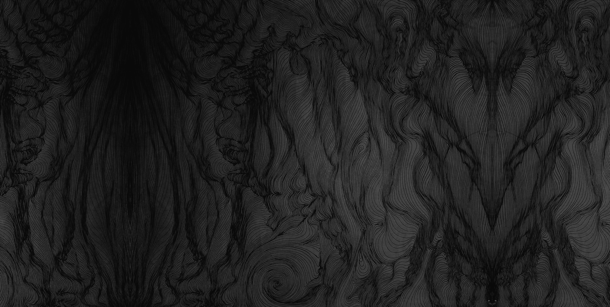

Sarah is a visual artist based in BC, Canada. Her work spans a variety of mediums — from painting, to drawing, to immersive digital media installations. Aesthetically, Sarah is drawn to symmetry, luminescence, and ethereal colours, and the night sky. To her, aesthetic is very important in the process of creation, as it guides her to create solely from her intuition. Through this process, her works consistently reflect themes of cosmology and sacred geometry. Her paintings, especially, represent the soul; the universe; the source.